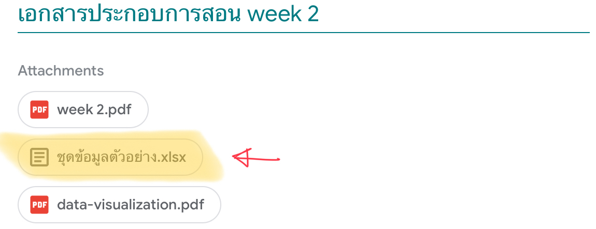

install.packages("gapminder")
library(gapminder)การสร้างทัศนภาพข้อมูลด้วยโปรแกรม R
บทนำ
โปรแกรม R มี package จำนวนมากที่ใช้สำหรับสร้างทัศนภาพข้อมูลในลักษณะต่าง ๆ ซึ่งสามารถทำได้อย่างยืดหยุ่น ผู้ใช้สามารถปรับแต่งรูปแบบรวมทั้งส่วนประกอบต่าง ๆ ของทัศนภาพข้อมูลได้อย่างหลากหลาย ทำให้สามารถสร้างทัศนภาพข้อมูลที่ดีได้อย่างมีประสิทธิภาพ
ยังมีข้อดีอีกหลายประการในการใช้โปรแกรม R สำหรับสร้างทัศนภาพข้อมูล ดังนี้ (สิวะโชติ ศรีสุทธิยากร, 2564)
โปรแกรม R สามารถนำเข้าข้อมูลได้หลายประเภท ด้วยวิธีการที่หลากหลาย ทั้งการป้อนข้อมูลโดยตรง การนำเข้าจากไฟล์ข้อมูลประเภทต่าง ๆ การเชื่อมต่อกับฐานข้อมูล ไปจนถึงการดาวน์โหลดและเก็บเกี่ยวข้อมูลจาก website (web scrapping)
เป็นโปรแกรมที่มีความสามารถสูงในการจัดระเบียบและจัดกระทำข้อมูล โดยมีเครื่องมือที่มีประสิทธิภาพสูงมากหลายตัว ซึ่งช่วยจัดระเบียบตารางข้อมูลให้อยู่ในรูปแบบที่เหมาะสำหรับการวิเคราะห์ข้อมูลต่าง ๆ รวมทั้งช่วยจัดกระทำข้อมูลเพื่อให้ได้ข้อมูลที่มีลักษณะตรงต่อความต้องการในแต่ละงานมากที่สุด
มีความสามารถสูงในการวิเคราะห์ข้อมูล โดยมีฟังก์ชันสำเร็จรูปจาก package เสริมที่มีจำนวนมากกว่า 10,000 ตัว ซึ่งทำให้การดำเนินงานทางด้านสถิติและวิทยาการข้อมูลสามารถทำได้อย่างสะดวก สามารถสร้างสารสนเทศที่เหมาะสมสำหรับทัศนภาพข้อมูลที่จะพัฒนาได้เป็นอย่างดี
เอกสารคำสอนเล่มนี้จะกล่าวถึงการสร้างทัศนภาพข้อมูลด้วย package หลายตัวโดยในเบื้องต้นจะกล่าวถึง package-ggplot2 ซึ่งเป็น package สำหรับสร้างทัศนภาพข้อมูลเชิงสถิตที่นักวิทยาการข้อมูลจำเป็นต้องรู้จัก
ความรู้และทักษะที่จำเป็น
การใช้งานโปรแกรม R ในการสร้างทัศนภาพข้อมูล (รวมทั้งการทำงานอื่น ๆ ที่เกี่ยวข้อง) ความรู้และทักษะที่จำเป็นต้องมีมาบ้างคือ การใช้โปรแกรม R พื้นฐาน กล่าวคือผู้ใช้งานควรมีความรู้เกี่ยวกับสภาพแวดล้อมพื้นฐานของ R มีความเข้าใจตัวแปรประเภทต่าง ๆ ใน R สามารถนำเข้าชุดข้อมูล จัดระเบียบ และจัดกระทำข้อมูลให้มีความพร้อมสำหรับการวิเคราะห์หรือการสร้างทัศนภาพข้อมูลได้ หากจะกล่าวอย่างเฉพาะเจาะจงผู้อ่านควรมีความรู้และสามารถใช้ package ได้แก่
readr(หรือฟังก์ชันใน base package ที่เกี่ยวข้องกับการนำเข้าข้อมูล)readxltidyrdplyr
ผู้อ่านที่ไม่มีพื้นฐานโปรแกรม R มาก่อนเลย แนะนำให้ศึกษาพื้นฐานการใช้ R มาก่อน โดยอาจศึกษาจากหนังสือ
อย่างไรก็ตามเนื้อหาในเอกสารคำสอนนี้จะมีการแทรกเนื้อหาพื้นฐานที่จำเป็นในพร้อม ๆ กับเนื้อหาหลักอยู่แล้ว หากผู้อ่านพอมีพื้นฐานอยู่บ้างคิดว่าน่าจะสามารถติดตามเนื้อหาในเอกสารคำสอนนี้ได้โดยไม่ยากนัก
ชุดข้อมูลที่ใช้เป็นตัวอย่างในเอกสารคำสอน
ชุดข้อมูลที่ใช้เป็นตัวอย่างในเอกสารคำสอนนี้ ประกอบด้วย
- ชุดข้อมูล
gapminderเป็นข้อมูลที่เกี่ยวข้องกับความอยู่ดีมีสุขของประชากรโลกในแต่ละประเทศ ชุดข้อมูลนี้เป็นชุดข้อมูลตัวอย่างที่อยู่ใน package-gapminder สามารถดาวน์โหลดและเรียกใช้ได้โดยพิมพ์คำสั่งต่อไปนี้
- ชุดข้อมูลจากไฟล์
ชุดข้อมูลตัวอย่าง.xlsxที่ได้ให้ไว้ในส่วนเอกสารประกอบการสอน week2 ใน google class room

เนื่องจากไฟล์ข้อมูล ชุดข้อมูลตัวอย่าง.xlsx เป็นไฟล์นามสกุล .xlsx การนำเข้าไฟล์ดังกล่าวจะใช้ฟังก์ชัน read_excel() ของ package-readxl ช่วย สำหรับผู้ที่เพิ่งเริ่มใช้ R หรือยังไม่มี package นี้สามารถดาวน์โหลดและติดตั้งได้โดยเขียนคำสั่งดังตัวอย่างด้านล่าง
install.packages("readxl")
library(readxl) หากยังจำได้ภายในไฟล์ ชุดข้อมูลตัวอย่าง.xlsx ประกอบด้วย worksheet ย่อย ๆ จำนวนหลาย worksheet ดังนั้นก่อนที่จะนำเข้าผู้วิเคราะห์ควรที่จะต้องสำรวจก่อนว่าภายในไฟล์ข้อมูลดังกล่าวมี worksheet อะไรบ้าง และ worksheet ไหนที่เกี่ยวข้องกับการทำงานของเรา การสำรวจ worksheet สามารถทำได้โดยใช้ฟังก์ชัน excel_sheets(path) โดยที่ path เรียกว่า อาร์กิวเมนท์ (argument) ของฟังก์ชัน excel_sheets() ผู้วิเคราะห์จะกำหนดการทำงานของฟังก์ชันใน R แต่ละฟังก์ชันผ่านทางอาร์กิวเมนท์ดังกล่าว ซึ่งจะแตกต่างกันไปตามฟังก์ชันที่เลือกใช้
ในกรณีนี้ path เป็นอาร์กิวเมนท์ เพื่อให้ผู้วิเคราะห์กำหนดชื่อไฟล์หรือที่อยู่ของไฟล์ที่ต้องการ ดังตัวอย่างด้านล่าง ซึ่งจะเห็นว่าชุดข้อมูลดังกล่าวประกอบด้วย worksheet จำนวน 10 worksheet
excel_sheets(path="/Users/siwachoat/Library/CloudStorage/OneDrive-ChulalongkornUniversity/Documents/เอกสารประกอบการสอน/2758686/ชุดข้อมูลตัวอย่าง.xlsx") [1] "งบประมาณด้านการศึกษา" "จำนวนผู้สำเร็จการศึกษา ปวช. ปวส"
[3] "ผลสัมฤทธิ์และรายได้เฉลี่ย" "online learning dataset"
[5] "PrePost" "โอกาสทางการศึกษา"
[7] "จำนวนปีการศึกษาเฉลี่ย" "สถิติ O-NET"
[9] "งานพัสดุโรงเรียน" "บรรยากาศในห้องเรียน" ในกรณีที่ไม่ทราบว่าจะกำหนดอาร์กิวเมนท์อย่างไร สามารถเรียกดูวิธีการใช้ฟังก์ชันต่าง ๆ จากคู่มือ โดยพิมพ์คำสั่ง ?excel_sheets()
สมมุติว่าผู้วิเคราะห์ต้องการใช้ข้อมูลใน worksheet "PrePost" สามารถ worksheet ดังกล่าวเข้ามาใน R ได้ด้วยฟังก์ชัน read_excel(path, sheet) โดยที่อาร์กิวเมนท์ path และ sheet ใช้สำหรับกำหนดชื่อหรือที่อยู่ของไฟล์ข้อมูล และ worksheet ที่ต้องการนำเข้า โดยการกำหนด worksheet ที่ต้องการนำเข้าสามารถกำหนดเป็นหมายเลขลำดับของ worksheet ก็ได้ หรือจะกำหนดเป็นชื่อของ worksheet ตามที่แสดงใน output ด้านบนก็ได้ดังตัวอย่างต่อไปนี้
mydata<-read_excel(path="/Users/siwachoat/Library/CloudStorage/OneDrive-ChulalongkornUniversity/Documents/เอกสารประกอบการสอน/2758686/ชุดข้อมูลตัวอย่าง.xlsx",
sheet="PrePost")คำสั่งข้างต้นหมายความว่าให้นำข้อมูลจากชุดข้อมูลที่กำหนดเข้ามาใน R แล้วเก็บไว้ในตัวแปร mydata ตัวแปรในเชิง programming มีความหมายที่แตกต่างไปจากตัวแปรในเชิงสถิติหรือการวิจัย โดยตัวแปรใน R นี้จะหมายถึงวัตถุภายในสภาพแวดล้อมของ R ที่ทำหน้าที่เก็บข้อมูล/ผลลัพธ์ที่ได้จากการประมวลผลเอาไว้ในหน่วยความจำของคอมพิวเตอร์ ซึ่งทำให้ผู้ใช้สามารถเรียกดูค่าที่เก็บไว้ในภายหลัง หรือนำค่า/ผลลัพธ์ที่เก็บไว้ไปใช้ในการดำเนินการในขั้นตอนอื่น ๆ ได้โดยง่าย (สิวะโชติ ศรีสุทธิยากร, 2564)
ตัวแปรใน R มีหลายประเภท และสามารถจำแนกได้หลากหลายลักษณะ หากจำแนกตามโครงสร้างอาจจำแนกได้เป็น ตัวแปรสเกลาร์ (scalar) เวกเตอร์ (vector) เมทริกซ์ (matrix) อาร์เรย์ (array) ชุดข้อมูล (dataframe/tibble) และลิสท์ (list)
ทบทวนการสำรวจชุดข้อมูลใน R
ตัวแปร gapminder และ mydata ที่นำเข้ามาในข้างต้นจะมีสถานะเป็นตัวแปรแบบชุดข้อมูล ผู้ใช้งานจะไม่ได้เห็นข้อมูลเป็นตารางเหมือนที่เห็นใน worksheet ของ excel หากต้องการเรียกดูหรือสำรวจข้อมูลดังกล่าวสามารถทำได้หลายวิธีการ วิธีการแรกคือเรียกชื่อตัวแปรตรง ๆ ดังนี้
mydata# A tibble: 10 × 3
student PreTest PostTest
<chr> <dbl> <dbl>
1 บุญเติม 2 1
2 บุญหนัก 2 4
3 บุญทับ 1 0
4 บุญรอด 2 1
5 บุญมี 3 6
6 บุญมา 0 4
7 บุญชุ่ม 3 8
8 บุญชอบ 0 1
9 บุญเยอะ 0 2
10 บุญเหลือ 1 5อย่างไรก็ตามการเรียกชื่อตัวแปรตรง ๆ ในข้างต้นอาจเกิดปัญหาข้อมูลล้นหน้า console (หากต้องการเห็นว่าปัญหาดังกล่าวเป็นอย่างไรลองเรียก gapminder ใน console ดู)
โดยปกติผู้วิเคราะห์จึงจะเรียกดูข้อมูลในชุดข้อมูลโดยสรุปผ่านฟังก์ชัน เช่น head(), tail(), summary(), str() หรือ glimpse() ดังตัวอย่างต่อไปนี้
head(mydata) #เรียกดูข้อมูลส่วนหัว 6 ค่าแรก# A tibble: 6 × 3
student PreTest PostTest
<chr> <dbl> <dbl>
1 บุญเติม 2 1
2 บุญหนัก 2 4
3 บุญทับ 1 0
4 บุญรอด 2 1
5 บุญมี 3 6
6 บุญมา 0 4str(mydata)tibble [10 × 3] (S3: tbl_df/tbl/data.frame)
$ student : chr [1:10] "บุญเติม" "บุญหนัก" "บุญทับ" "บุญรอด" ...
$ PreTest : num [1:10] 2 2 1 2 3 0 3 0 0 1
$ PostTest: num [1:10] 1 4 0 1 6 4 8 1 2 5การเรียกใช้ฟังก์ชัน glimpse() จำเป็นต้องติดตั้ง package-dplyr เพิ่มเติม ดังนี้
install.packages("dplyr")
library(dplyr)
Attaching package: 'dplyr'The following objects are masked from 'package:stats':
filter, lagThe following objects are masked from 'package:base':
intersect, setdiff, setequal, unionglimpse(mydata)Rows: 10
Columns: 3
$ student <chr> "บุญเติม", "บุญหนัก", "บุญทับ", "บุญรอด", "บุญมี", "บุญมา", "บุญชุ่ม", "บุญ…
$ PreTest <dbl> 2, 2, 1, 2, 3, 0, 3, 0, 0, 1
$ PostTest <dbl> 1, 4, 0, 1, 6, 4, 8, 1, 2, 5ฟังก์ชัน summary() จะแสดงค่าสถิติพื้นฐานของตัวแปร ซึ่งขึ้นอยู่กับประเภทของตัวแปรในชุดข้อมูล โดยถ้าเป็นตัวแปรเชิงปริมาณ จะนำเสนอค่าสถิติของ Tukey 5 ค่า และค่าเฉลี่ย แต่ถ้าเป็นตัวแปรจัดประเภทจะนำเสนอการแจกแจงความถี่ของตัวแปรนั้น อย่างไรก็ตามตัวแปรจัดประเภทดังกล่าวต้องมีสถานะเป็นตัวแปร factor ก่อน (ไว้จะหาโอกาสกล่าวถึงอีกทีภายหลัง)
summary(mydata) student PreTest PostTest
Length:10 Min. :0.00 Min. :0.00
Class :character 1st Qu.:0.25 1st Qu.:1.00
Mode :character Median :1.50 Median :3.00
Mean :1.40 Mean :3.20
3rd Qu.:2.00 3rd Qu.:4.75
Max. :3.00 Max. :8.00 ทบทวนการจัดกระทำข้อมูลด้วย package-dplyr
packge-dplyr เป็น package อีกอันหนึ่งที่มีแนวโน้มจะใช้มากในงานสร้างทัศนภาพข้อมูล (รวมถึงงานวิเคราะห์ข้อมูลอื่น ๆ ด้วย) package ดังกล่าวใช้สำหรับสำหรับการจัดกระทำข้อมูลที่อยู่ในรูปแบบตาราง (tabular data) เครื่องมือหลัก ๆ ของ package นี้ได้แก่ฟังก์ชัน
select()สำหรับคัดเลือกตัวแปรที่ต้องการจากชุดข้อมูลfilter()สำหรับคัดกรองหน่วยข้อมูลจากชุดข้อมูลmutate()สำหรับแปลงข้อมูลค่าสังเกตของตัวแปรจากชุดข้อมูลsummarise()สำหรับคำนวณค่าสถิติพื้นฐานของตัวแปรจากชุดข้อมูลarrange()สำหรับจัดลำดับข้อมูลเหมือนฟังก์ชัน sort ใน excelgroup_by()สำหรับจัดกลุ่มหน่วยข้อมูลตามค่าของตัวแปรจัดประเภทที่กำหนด มักใช้ร่วมกับฟังก์ชันsummarise()
นิสิตที่ยังไม่มีพื้นฐาน dplyr เลยสามารถศึกษาได้จาก google ตามความถนัด หรือเอกสารที่แนะนำในข้างต้น